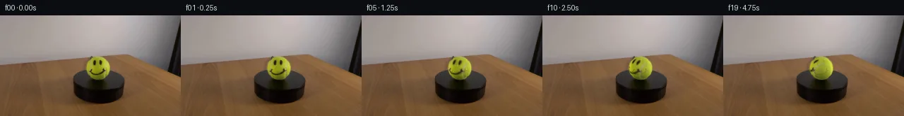

![首帧]()

Round 00
2026-11-05T17:57:44.809936+00:00像素候选变化代码 +115/−0inspection 更新
pixels be37ee1646567e3f · code 74f84388ce0cc0fd
查看本轮 generate.py 真实 diff
--- previous/generate.py
+++ current/generate.py
@@ -0,0 +1,115 @@
+"""Source-image sphere reprojection; no models or external rendering engine."""
+from pathlib import Path
+import numpy as np
+from PIL import Image, ImageDraw
+from scipy.ndimage import map_coordinates, distance_transform_edt, gaussian_filter
+from artifact_io import save
+
+ROOT = Path(__file__).resolve().parent
+SOURCE = np.asarray(Image.open(ROOT / 'first_frame.png').convert('RGB'))
+CX, CY, RX, RY = 138.65, 75.55, 16.65, 16.55
+X0, X1, Y0, Y1 = 119, 159, 56, 96
+SS = 4
+ELEVATION = np.deg2rad(23.0)
+AXIS = np.array([0.0, np.cos(ELEVATION), np.sin(ELEVATION)])
+
+# The photograph provides both the texture and the initial lighting.
+yy, xx = np.mgrid[0:144, 0:256]
+nx = (xx-CX)/RX
+ny = -(yy-CY)/RY
+rr = nx*nx + ny*ny
+nz = np.sqrt(np.maximum(0, 1-rr))
+src = SOURCE.astype(np.float64)
+# Yellow-green donor pixels exclude the black face, the pale seams and edges.
+clean = (rr < .85) & (src[:,:,1] > 74) & (src[:,:,1]-src[:,:,2] > 65) & (src[:,:,1]-src[:,:,0] > 0)
+# Approximate fixed illumination using a smooth fit to the source green values.
+design = np.stack([np.ones_like(nx), nx, ny, nz, ny*ny], axis=-1)
+coeff = np.linalg.lstsq(design[clean], src[:,:,1][clean], rcond=None)[0]
+light_image = np.clip(np.sum(design*coeff, axis=-1)/145.0, .50, 1.45)
+albedo = src / light_image[:,:,None]
+# Propagate genuine clean felt colors into unavailable pixels. Smooth the fill
+# slightly but keep the known photographed surface (including the face) intact.
+_, nearest = distance_transform_edt(~clean, return_indices=True)
+filled = albedo[nearest[0], nearest[1]]
+filled = gaussian_filter(filled, sigma=(1.1, 1.1, 0))
+valid_body = rr < .89
+texture = np.where(valid_body[:,:,None], albedo, filled)
+
+# Supersampled camera-facing sphere normals, using a fixed round silhouette.
+gy, gx = np.mgrid[Y0:Y1:1/SS, X0:X1:1/SS]
+gx += (0.5/SS-0.5)
+gy += (0.5/SS-0.5)
+u = (gx-CX)/RX
+v = -(gy-CY)/RY
+rad2 = u*u+v*v
+w = np.sqrt(np.maximum(0, 1-rad2))
+normals = np.stack([u, v, w], axis=-1)
+normals /= np.maximum(np.linalg.norm(normals, axis=-1, keepdims=True), 1e-8)
+# At the photographed silhouette preserve the source's fuzzy antialiasing.
+matte = np.clip((1-np.sqrt(rad2))/.072, 0, 1)
+light = np.clip(coeff[0] + coeff[1]*u + coeff[2]*v + coeff[3]*w + coeff[4]*v*v, 72.5, 210.25)/145.0
+
+def sample(img, sx, sy):
+ return np.stack([map_coordinates(img[:,:,k], [sy, sx], order=1, mode='nearest') for k in range(3)], axis=-1)
+
+def render_surface(degrees):
+ # Negative right-hand rotation around world-up is clockwise from above.
+ # Sampling uses the inverse, positive angle rotation.
+ theta = np.deg2rad(degrees)
+ c, s = np.cos(theta), np.sin(theta)
+ n = normals*c + np.cross(AXIS, normals)*s + AXIS*np.sum(normals*AXIS, axis=-1, keepdims=True)*(1-c)
+ # Mapping remains attached to the ball as it turns. The rear hemisphere
+ # uses felt colors reconstructed from the same photograph.
+ sx = CX + RX*n[:,:,0]
+ sy = CY - RY*n[:,:,1]
+ original = sample(texture, sx, sy)
+ clean_side = sample(filled, sx, sy)
+ visible_source = np.clip((n[:,:,2]-.035)/.20, 0, 1)
+ visible_source = visible_source*visible_source*(3-2*visible_source)
+ surface = original*visible_source[:,:,None] + clean_side*(1-visible_source[:,:,None])
+ return surface*light[:,:,None]
+
+reference = render_surface(0.0)
+frames = [SOURCE.copy()]
+for i in range(1,20):
+ rotated = render_surface(i*4.0)
+ delta = (rotated-reference)*matte[:,:,None]
+ delta = delta.reshape(Y1-Y0, SS, X1-X0, SS, 3).mean(axis=(1,3))
+ out = SOURCE.copy()
+ out[Y0:Y1,X0:X1] = np.clip(np.rint(src[Y0:Y1,X0:X1]+delta),0,255).astype(np.uint8)
+ frames.append(out)
+frames = np.stack(frames)
+save(frames, ROOT)
+
+# A labeled transition sheet: crops and amplified differences, for all pairs.
+sheet = Image.new('RGB', (800, 580), (24,27,32))
+draw = ImageDraw.Draw(sheet)
+draw.text((10,7),'Consecutive transitions: fixed ball crop / 4x absolute pixel difference',fill='white')
… diff truncated; 28 more lines …